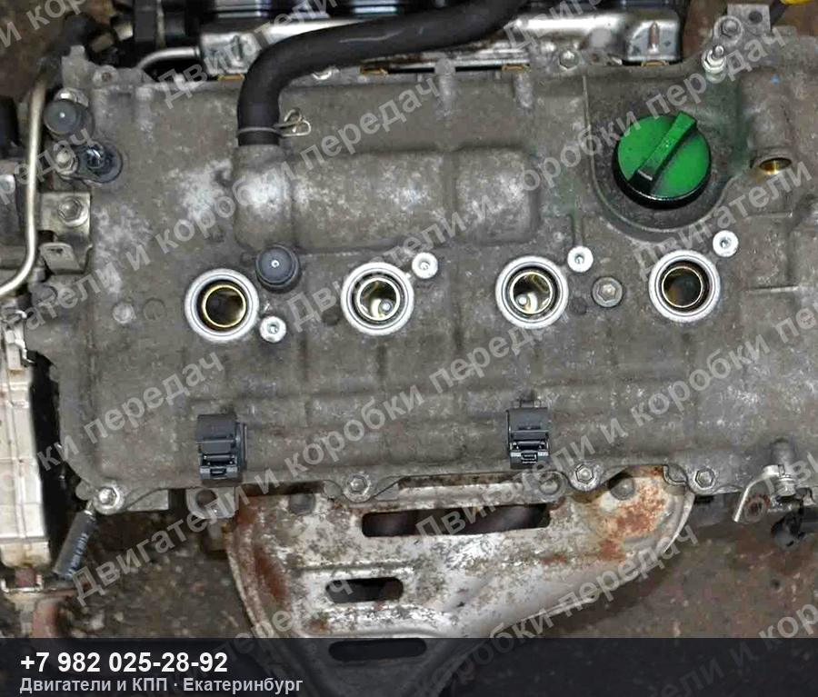
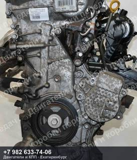
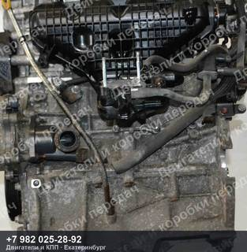
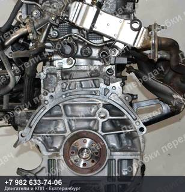
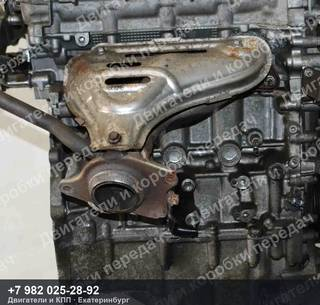

Контрактный двигатель Toyota AURIS/LEXUS/NOAH/VOXY/PRIUS ZVW30/ZVW35/ZVW40/ZVW41/ZWA10/ZWE186/ZWR80
Контрактный двигатель Toyota AURIS/LEXUS/NOAH/VOXY/PRIUS ZVW30/ZVW35/ZVW40/ZVW41/ZWA10/ZWE186/ZWR80 — 2ZR/2ZR-FXE, пробег 118 000 км.
| Марка | TOYOTA |
| Модель | AURIS/LEXUS/NOAH/VOXY/PRIUS |
| Кузов | ZVW30/ZVW35/ZVW40/ZVW41/ZWA10/ZWE186/ZWR80 |
| Двигатель | 2ZR/2ZR-FXE |
| Пробег | 118 000 км |
| Номер детали | 118000km |
| OEM-номера | 1900037470, 1900037472 |
| Состояние | Б/у |
| Артикул | ДК-592409 |
Контрактный двигатель Toyota AURIS/LEXUS/NOAH/VOXY/PRIUS ZVW30/ZVW35/ZVW40/ZVW41/ZWA10/ZWE186/ZWR80 — что важно знать
Агрегат снят с автомобиля TOYOTA AURIS/LEXUS/NOAH/VOXY/PRIUS ZVW30/ZVW35/ZVW40/ZVW41/ZWA10/ZWE186/ZWR80 пробег 118 000 км. Двигатель 2ZR/2ZR-FXE. Номер детали 118000km. Подходящие OEM-номера: 1900037470, 1900037472.
Перед отправкой агрегат проверяем и фотографируем. Пришлём фотографии и видео работы именно этого экземпляра, поможем проверить совместимость по VIN вашего автомобиля. Отправка из Екатеринбурге до транспортной компании — бесплатно, дальше — любой ТК до вашего города.
Не нашли свой контрактный двигатель Toyota AURIS/LEXUS/NOAH/VOXY/PRIUS?
Пришлите VIN или марку с моделью — проверим по складу и подберём то, что точно встанет на вашу машину. Ответим и подскажем, даже если у нас этого нет.
Похожие агрегаты Toyota